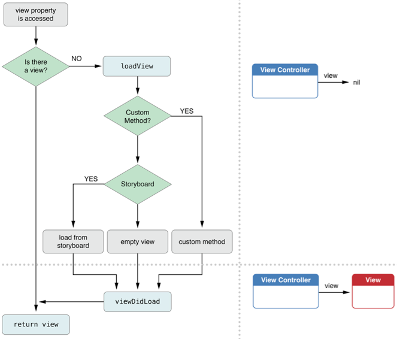

首先看一段代码
1 |
|
结果是 label 中的文字没有显示, 我们来找一下原因
首先我们先看一下 UIViewController 加载的生命周期

然后我写一下关键时刻的调用栈就清楚原因了。
-[LabelViewController label]//这时候view已经加载过了, 当这个函数调用完成后就应该出栈了-[LabelViewController.view addSubview:self.label]-[LabelViewController viewDidLoad]//-[LabelViewController label]没有执行完成,label还为空-[LabelViewController view]// 由于调用了self.view方法这时候view为空-[LabelViewController label]// 只是执行到了[[UILabel alloc]initWithFrame: self.view.bounds];-[ViewController pushLableViewControllerAction]
我们分析出添加到 view 上的是一个对象, 而 LabelViewController 拥有的是另一个对象，所以设置的 label 中的文字是不会显示的